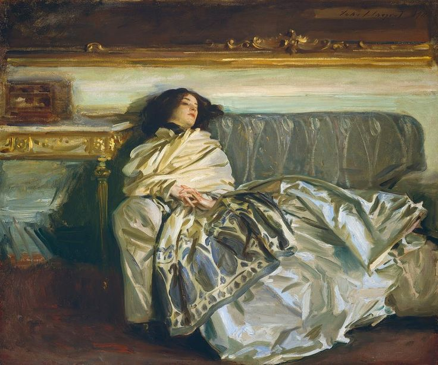

"Хозяйка" – это небольшая повесть Фёдора Михайловича Достоевского, написанная в 1847 году. Она считается одним из ранних произведений автора, где уже прослеживаются ключевые темы и стилистические черты, характерные для его более поздних работ.
Повесть рассказывает историю молодого человека по имени Иван Петрович, который приезжает в небольшой город и поселяется в доме у богатой вдовы Анны Фёдоровны. Иван Петрович влюбляется в Анну Фёдоровну, но их отношения осложняются тем, что он чувствует себя недостойным ее любви. Он боится отвержения, он не уверен в своих силах, он считает себя не достойным ее богатства и красоты. В то же время Анна Фёдоровна тайно влюблена в одного молодого человека по имени Николай, который является сыном ее покойного мужа. Николай же любит соседку Анны Фёдоровны, которая является бедной и непривлекательной девушкой. В повести происходит целая серия конфликтов, связанных с любовными треугольниками, с социальным неравенством, с невозможностью достичь счастья. Иван Петрович борется со своей нерешительностью, он пытается признать свою любовь к Анне Фёдоровне, но он не может преодолеть свой страх. В конце концов, Иван Петрович уезжает из города, оставляя Анну Фёдоровну с ее несбывшимися надеждами и с тяжестью ее прошлого.
"Слабосердечный": Иван Петрович - это главный герой, страдающий от "слабого сердца". Он не просто болен физически, но и испытывает глубокую душевную слабость, которая проявляется в приступах страха, нерешительности, самоуничижении.
"Слабовольный": Иван Петрович не может сделать выбор, не может отстоять свою позицию. Он позволяет жизни течь сама по себе, не стараясь влиять на ее ход.
Замкнутый и неуверенный: Иван Петрович замкнут в себе, неуверен в собственных силах, не верит в свои возможности. Он боится жизни, боится людей, боится любви. Его неуверенность мешает ему раскрыться, найти счастье и реализовать свои желания.
Жертва страха: Иван Петрович - жертва своего страха. Он боится всего: счастья, любви, ответственности, отвержения. Этот страх делает его не счастливым, но и не свободным.
Загадочная героиня: Анна Фёдоровна - богатая вдова, красивая и умная женщина. О ее характере и чувствах мы знаем мало. Она любит Ивана Петровича, но она скрывает свою любовь, не раскрывает свои чувства.
"Ожидание и надежда": Именно такое ощущение оставляет у читателя образ Анны Фёдоровны. Она ожидает от Ивана Петровича чего-то неизвестного, она верит, что он может измениться, что он может стать счастливым.
Жертва обстоятельств: Анна Фёдоровна является жертвой обстоятельств. Она не может влиять на жизнь Ивана Петровича, она может только ждать, надеяться и любить.
"Влюбленный, но несвободный": Николай - молодой человек, сын покойного мужа Анны Фёдоровны. Он красивый и уверенный в себе, но он не свободен от греха. Он любит другую женщину и не может отказаться от своей любви.
"Символ прошлого": Старуха, как и Надежда Федоровна, не может влиять на Алексея Ивановича. Она не может избавить его от его "слабости".
"Тень прошлого": Николай представляет собой образ прошлого, которое тяготит Анну Фёдоровну. Он символизирует невозможность изменить свою судьбу, невозможность забыть прошлые ошибки.
Слуги: Слуги в доме Анны Фёдоровны не играют значительной роли в повести, но они отражают атмосферу застоя и безысходности в жизни главных героев.
Городские сплетники: Они подчеркивают атмосферу провинциальной жизни, где все знают все и где невозможно скрыть свои тайны.
